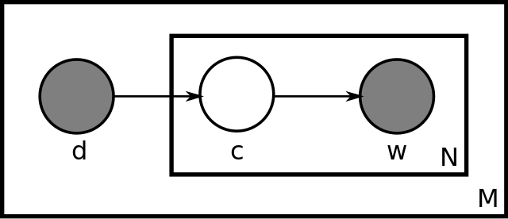

Parameters
- K: number of topics
- M: number of documents
- Nm: length of m-th document
- V: size of vocabulary
- φ: K×V, word distribution of topics
- θ: M×K, topic distribution of documents
Likelyhood Function
logp(C)=∑d∈Clogp(d)
where
logp(d)=∑w∈Vc(w,d)logpd(w)
pd(w)=∑k=1Kθd,kp(w|φk)
ML is done by EM algorithm
Criticism
- number of parameters: MK+KV, grows linearly by the number of documents. So pLSA is prone to overfitting and can't easily handle unseen documents (But sometimes what we want is just to "overfit" our dataset)
Reference
Text Mining: https://www.coursera.org/learn/text-mining